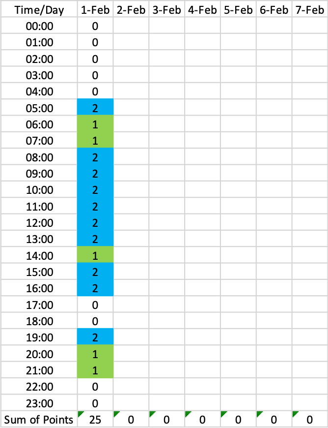

Productivity System Testing
I review and experiment with productivity systems in hopes of finding one that improves my own system. Each entry is organized as follows:
-
Info (as applicable): Title, author, link, experiment timeframe, see also.
-
Summary: High-level overview of the system, highlights, and any notes (or link to notes) that I took.
-
Methods: How I plan to implement it into my life, any additions/subtractions/modifications to the system.
-
Results: How it worked for me. Each system may have different metrics, both objective and subjective.
-
Thoughts: What I think of the system, what I would change, recommendations, etc.
My productivity philosophy is simple: take what works, discard what doesn't, and don't try too hard to force anything to work. This is my attempt to see what works for me in these systems. The timeframes range from 30-60 days, which isn't trying too hard to force anything to work. If something really isn't working for me, I'll stop when I recognize that.
Contents
Pomodoros
Info
Summary
The Pomodoro technique is simple: set a timer for 25:00 min to work on a single task and nothing else whatsoever. After the 25:00 min is up, take a 5:00 min break. Rinse and repeat. After every fourth cycle, take a longer 15:00-30:00 min break.
Comments from The Power of Pomodoros (unformatted for simplicity):
What you do during the break matters a lot. It should be rewarding and energizing or relaxing. Anyway, I've had success reducing an Ugh Field (around studying) by celebrating like a madman when the timer ended and then doing a few dishes (which I usually abhor, but is both relaxing and rewarding as a break). Once the Ughly Beast was down on its knees, I was able to abandon the timer and go over 25 minutes and I have been kicking its ass ever since. Some suggestions for break activities: dancing, jumping, throwing air punches; playing with a musical instrument; scribbling on a piece of paper; small housekeeping tasks. Avoid: browsing, esp. reddit; anything that can't be interrupted instantly e.g. reading or watching a video; anything that may cause an interruption later on or will occupy your mind e.g. beginning to cook; reddit
Methods
I will use Pomodoros over the course of two workweeks.
Results
-
Started with 25-5 cycles, but increased it to 40-5 after 25:00 minutes wasn't enough and I was starting to get into the flow. Definitely helps to "gamify" work, and the app I use keeps track of total number of cycles performed per day (and graphs them over the course of time). Total: 7 cycles. Cut a few short/long due to other stuff. Overall, around 8:00 hours of focused work today, more than I normally complete.
-
Continued with 40-5 cycles today, but even those are a bit too short at times. Will update to 50-10 cycles beginning tomorrow. Total: 4 cycles. Worked much longer not on cycles.
-
50-10 worked well. Work periods allow flow and breaks feel fairly long. I will stick with this, if not decrease the break a bit. Total: 2 cycles. Worked much longer not on cycles.
-
Didn't do any cycles today—the work I was doing just didn't call for it and I was regularly interrupted. Total: 0 cycles.
-
Didn't do any cycles today—the work I was doing just didn't call for it and I was regularly interrupted. Total: 0 cycles.
-
-
-
-
-
Thoughts
-
25-5 cycles are probably too short for any meaningful work to get done and the break too short to get any real relaxation. Longer cycles of (50-80)-(10-20) are likely more efficient: longer work periods allow work to "flow" for longer and longer breaks allow more relaxation.
-
It's important that the work portion of cycles are devoted strictly to work and nothing else.
-
Pomodoros really only work on solitary work tasks.
120-Hour Workweek
Info
Summary
Winter spends 120.75 hours over the course of a single week coding for personal project (job?). He makes many observations along the way, ranging from "Viking metal is stronger than sleep" to "I speed up the longer I go".
Methods
I will work six 12-hour days, totaling 72 hours for that week. A far shot from Winter's 120 hours, but significantly more than the normal 40 I work. These days will be roughly split up as:
-
Personal: 4:30-7:00am
-
Work: 7:00am-12:00pm (5)
-
Break: 12:00-12:30pm
-
Work: 12:30-6:00pm (5.5)
-
Break: 6:00-7:00pm
-
Work: 7:00-8:30pm (1.5)
-
Personal: 8:30pm-bedtime
Results
A few thoughts and expectations I have before starting this test:
-
I may run out of things to work on. If this happens, I will call it off for that day. There's no point in staying at work to do nothing.
-
I expect to see how much a role eating lunch plays in my productivity. I generally don't eat during the day, leaving me feeling lethargic at the end of the day. I will track what I have for lunch and how I feel towards the end of the day.
-
My job satisfaction is proportional to how busy I am: if there is a lot to do and work on, I am much happier, whereas sitting at my desk twiddling my thumbs leads to an existential crisis of why I'm working here and how am I going to do so for the next 15 years. The proportion is on a percentage scale rather than an absolute scale, i.e., I experience approximately the same amount of satisfaction in working 8 vs. 12 hr if I'm busy the 100% of the time.
Thoughts
Time Well Spent
Info
Summary
Falkovich tracks his days hour-by-hour and assigns specific values to the hour according to the activity:
-2 points for each half an hour spent at a screen (TV/internet) after midnight, or awake for any reason after 1 am.
0 points for filler activities, like sleep, commute or reading blogs. I’m sorry, you’re not earning any credit right now.
1 point for reading books and walking, two things that are positive but I’d do them anyway. Reading and walking are what I do on vacation.
2 points for things that are important but that I would do anyway because of outside pressure (my actual job, cooking) or because I love doing them (time with my fiancee and friends, playing sports).
3 points for important activities whose benefits are too long-term to be immediately motivating: gym, self-study, blogging.
And 4 points for each half hour doing something that primarily benefits others, like volunteering or helping a friend in need.
Hours are summed, allowing review of day-to-day and week-to-week differences.
Methods
My points will be assigned as follows (rationale and considerations included) with a resolution of 1 hr:
-
-2 points: Every 30 min spent at a screen after 9:00pm, if I'm awake for any reason after 10:00pm, and for every 30 min of sleep below 6:00 hr. Exceptions to this include if I am socializing or having to work.
-
-1 point: Every 15 min over 77 min spent on "Entertainment" content. I use RescueTime to track my computer time and StayFocusd to limit time spent on unproductive websites. I allow myself 77 min/day (9 hr/week) on Reddit, Twitch, YouTube, and a few others. On occasion I will bypass it via an incognito Chrome browser.
-
0 points: Commuting, hygiene, chores, laundry, cooking, sleep. These are required and non-productive tasks.
-
1 point: Reading books/internet links and spending time with friends (virtual or in-person). Like Jacob, I would do this anyway.
-
2 points: Work, exercise.
-
3 points: Writing for this website.

Example week with made-up numbers
Conditional formatting was used to color the cells based on value and give a more visual representation of how I'm doing.
Results
Thoughts